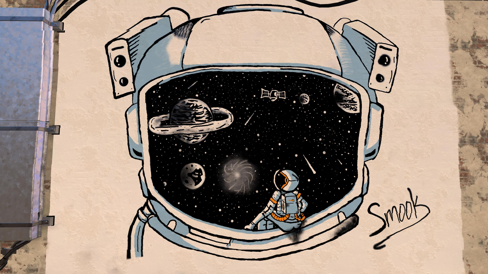

My Major is Computer science. I hope to expand my coding knowledge with this class,
along with expanding my options for after college. And who knows, maybe I'll stick with it!
Hobbies
I play many video games along with lots of sports. My top 3 video games i play are Valorant, Rocket League,
and Minecraft. The main sport I'm playing right now is Volleyball. But I've also played on teams for
Football, Basketball, Soccer and Baseball. I also enjoy music and art, below is a piece i finished recently.

Member of the Church of Jesus Christ
I have been a member my whole life. I served a mission in Johannesburg, South Africa.
I was moved to Farmington, New Mexico during covid. A few quotes i love are:
James 1:5-6
"5 If any of you lack wisdom, let him ask of God, that giveth to all men liberally, and upbraideth not;
and it shall be given him.
6 But let him ask in faith, nothing wavering. For he that wavereth is like a wave of the sea driven with the wind
and tossed."
President Dieter F. Uchtdorf
"Therefore, my dear brothers and sisters—my dear friends—please, first doubt your doubts before you doubt your
faith.8 We must never allow doubt to hold us prisoner and keep us from the divine love, peace, and gifts that
come through faith in the Lord Jesus Christ."